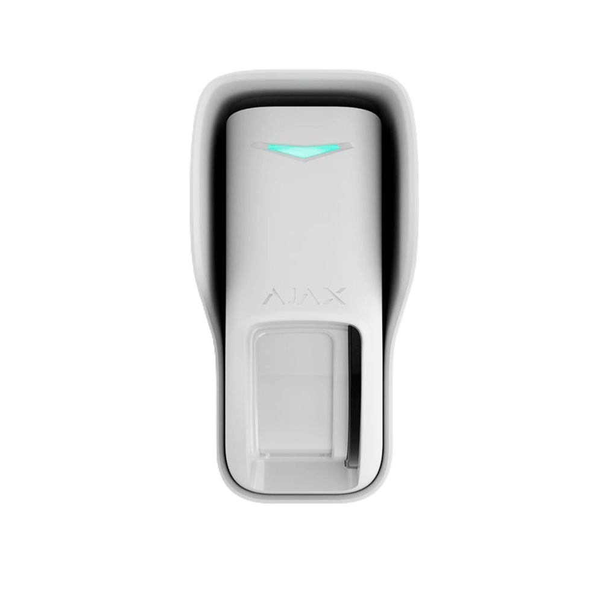
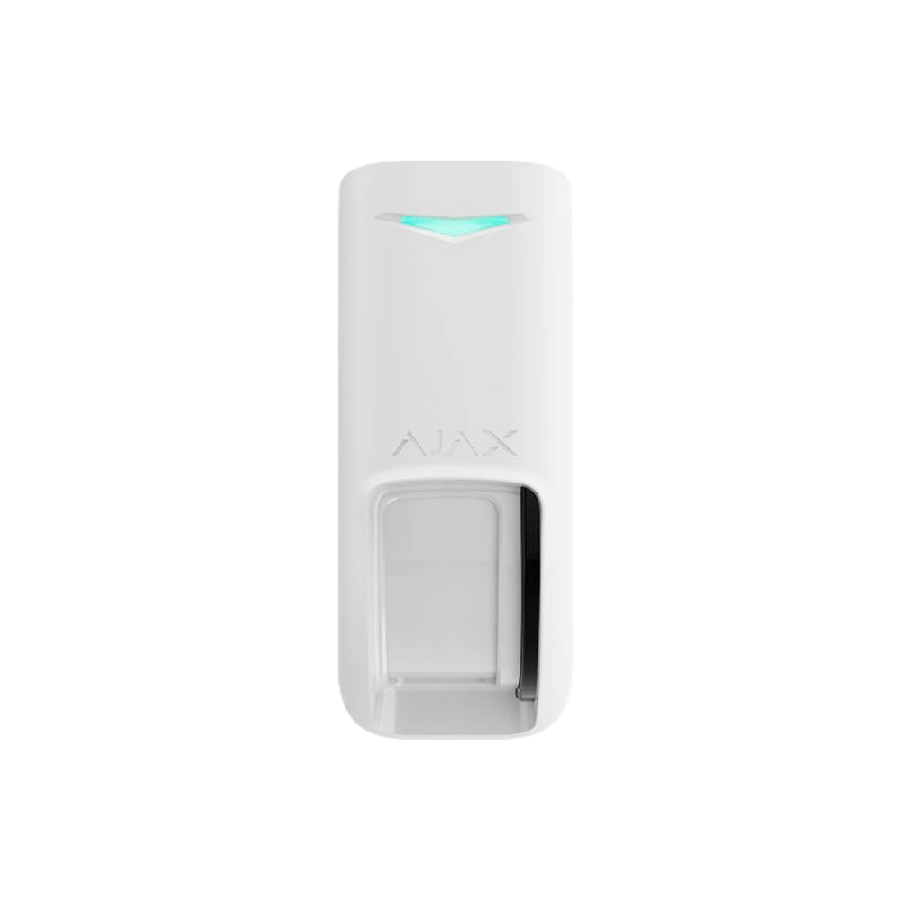
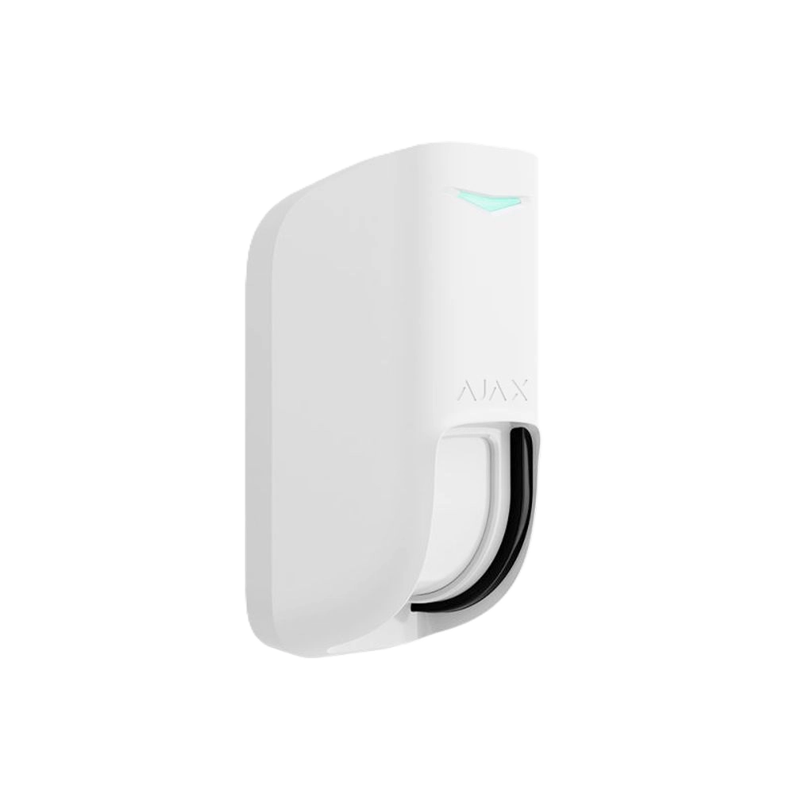

Датчик руху Ajax Curtain Outdoor Jeweller типу "штора"




❮
❯
Бездротовий датчик руху Ajax Curtain Outdoor Jeweller типу "штора" з подвійною технологією виявлення призначений для захисту вікон, дверей, стін та інших вертикальних площин на вулиці та в приміщенні. Обладнаний двома інфрачервоними сенсорами та одним мікрохвильовим сенсором K-діапазону (24 ГГц) для запобігання хибним тривогам від теплових перешкод. Створює вузький вертикальний промінь виявлення: 8° по горизонталі та 85° по вертикалі (при встановленні на висоті 2,4 м). Дальність виявлення 8-12 метрів (налаштовується повзунком). Технологія подвійного виявлення та алгоритм SmartDetect забезпечують мінімум хибних спрацювань. Імунітет до тварин заввишки до 100 см при встановленні на висоті 1 м. Працює при температурах від -25°C до +60°C, захист IP55. Акселерометр виявляє спроби зрушити датчик. Дальність зв'язку з хабом до 1700 м, автономна робота до 3 років від двох батарей CR123A. Навіс та кутовий кронштейн у комплекті.
Основні характеристики:
Основні характеристики:
- Датчик типу "штора" для захисту вертикальних площин
- Подвійна технологія: 2 ІЧ сенсори + 1 мікрохвильовий сенсор K-діапазону (24 ГГц)
- Вузький промінь: 8° по горизонталі, 85°/75°/15° по вертикалі
- Дальність виявлення: 8-12 метрів (налаштовується)
- Висота встановлення: 2,4 м або 1 м (режим Pet)
- Швидкість виявлення: 0,3-2,0 м/с
- Імунітет до тварин: заввишки до 100 см (при 1 м висоти)
- 3 рівні чутливості (налаштовується)
- Алгоритм SmartDetect для захисту від хибних тривог
- Акселерометр для виявлення зрушення датчика
- Система антимаскування
- Температурна компенсація: -25°C до +60°C
- Дальність зв'язку: до 1700 м
- Автономна робота: до 3 років від 2 × CR123A
- Захист IP55 + навіс та кутовий кронштейн у комплекті
- Створює вузький вертикальний промінь виявлення (на відміну від широкого конуса звичайного датчика)
- Ідеально підходить для захисту вікон, дверей, воріт
- Контроль проходу через отвір, двері, коридор
- Захист стін від перелізання
- Охорона огорожі, паркану
- Вузький кут 8° мінімізує зону виявлення — немає хибних спрацювань від руху в стороні
- Висока зона виявлення 85° (при встановленні на 2,4 м) покриває всю висоту
- Не реагує на рух всередині приміщення або за стіною
- 2 інфрачервоні сенсори аналізують теплове випромінювання
- 1 мікрохвильовий сенсор K-діапазону (24 ГГц) аналізує рух
- Тривога тільки при спрацюванні ОБОХ технологій одночасно
- ІЧ сенсори виявляють зміну температури (рух теплого об'єкта)
- Мікрохвильовий сенсор виявляє рух об'єкта (ефект Доплера)
- Захист від хибних спрацювань на теплові перешкоди (сонце, обігрівачі)
- Робоча частота мікрохвильового сенсора: 24 ГГц (K-діапазон)
- Максимальна точність виявлення руху
- Мінімум хибних тривог навіть в складних умовах
- Горизонтальний кут: 8° (вузький промінь)
- Вертикальний кут: 85°/75°/15° (залежить від висоти встановлення)
- При встановленні на висоті 2,4 м: вертикальний кут 85° або 75°
- При встановленні на висоті 1 м: вертикальний кут 15°
- Вузький промінь "штора" покриває вікно, двері або прохід
- Не реагує на рух в стороні від зони виявлення
- Ідеально для вузьких зон (коридори, проходи)
- Регульована дальність за допомогою повзунка на корпусі
- Мінімальна дальність: 8 метрів
- Максимальна дальність: 12 метрів
- Встановлення на висоті: 1-2,4 метри
- Можливість точного налаштування під конкретний об'єкт
- Зменшення хибних спрацювань за межами зони інтересу
- Економія енергії при меншій дальності
- Рекомендована висота: 2,4 м (стандартний режим)
- Або 1 м (режим Pet — нечутливий до тварин)
- При висоті 2,4 м: максимальний вертикальний кут 85° або 75°
- При висоті 1 м: вертикальний кут 15° + імунітет до тварин заввишки до 100 см
- Повзунок Pet на корпусі для активації режиму нечутливості до тварин
- Налаштування висоти залежить від завдання (вікно, двері, рух по підлозі)
- Виявляє рух від повільної ходьби (0,3 м/с) до швидкого бігу (2,0 м/с)
- Оптимальний діапазон для виявлення людини
- Не реагує на дуже повільні рухи (гілки дерев)
- Не реагує на дуже швидкі рухи (птахи, листя)
- Направлення лінзи має бути перпендикулярним шляху руху
- Максимальна ефективність при русі поперек променя "штори"
- Активується повзунком Pet на корпусі датчика
- Встановлення на висоті 1 м обов'язкове для режиму Pet
- Не реагує на тварин заввишки до 100 см
- Підходить для будинків з великими собаками
- Розпізнає відмінність між людиною та твариною
- Аналіз швидкості руху та характеру об'єкта
- Зменшення хибних спрацювань від тварин
- Низька чутливість: для зон з можливими завадами
- Середня чутливість: стандартний режим (рекомендовано)
- Висока чутливість: для максимальної точності виявлення
- Налаштовується через застосунок Ajax
- Можливість налаштування PRO або адміністратором
- Дозволяє оптимізувати роботу під конкретні умови
- Розумна технологія виявлення від Ajax
- Програмний алгоритм фільтрує помилкові спрацювання
- Аналіз характеру руху
- Відсівання сигналів від тварин, птахів, комах
- Захист від спрацювань на рухомі гілки дерев
- Захист від впливу дощу, снігу, граду
- Працює разом з подвійною технологією виявлення
- Мінімізація хибних тривог до рівня менше 1%
- Ефективне виявлення руху в екстремальних температурах
- Працює взимку при морозах до -25°C
- Працює влітку при спеці до +60°C
- Автоматична компенсація чутливості залежно від температури
- Стабільна робота при різкій зміні температури
- Підходить для використання в Україні цілий рік
- Не потребує сезонного переналаштування
- Пропрієтарна технологія Ajax для передавання команд, тривог і подій
- Дальність зв'язку: до 1700 м (між датчиком і хабом за відсутності перешкод)
- Двосторонній зв'язок з хабом
- Блокове шифрування з плаваючим ключем
- Передовий захист від саботажу
- Миттєві сповіщення про події
- Дистанційне керування та налаштування
- Радіочастотний гопінг для запобігання глушінню
- Діапазони радіочастот: 866-926.5 МГц (залежно від регіону)
- Максимальна потужність: до 20 мВт (автоматичне регулювання)
- Модуляція: GFSK
- Використовується для завантаження оновлення прошивки
- Двосторонній захищений зв'язок
- Блокове шифрування з плаваючим ключем
- Повторне завантаження пакетів даних у разі збоїв
- Дальність передачі: до 1700 м
- Радіочастотний гопінг для запобігання глушінню
- Оновлення прошивки Over-the-Air (OTA)
- Не потрібно знімати датчик для оновлення
- Виявляє спроби закрити або заблокувати огляд датчика
- Контроль наявності перешкод перед лінзою
- Миттєве сповіщення при спробі маскування
- Захист від фарби, стрічки, плівки на лінзі
- Захист від установки перешкод перед датчиком
- Навіс у комплекті захищає від дощу та снігу
- Важливий елемент професійної системи безпеки
- Вбудований акселерометр контролює положення датчика
- Сповіщення при спробі зрушити або повернути датчик
- Обов'язково активувати при встановленні на сторонній кронштейн
- Захист від спроб змінити напрямок променя виявлення
- Додатковий рівень захисту від саботажу
- Налаштовується через застосунок Ajax
- Додаткове кріплення для надійної фіксації
- Щоб надійно закріпити датчик на SmartBracket або навісі
- Запобігає випадковому зняттю датчика
- Рекомендується для зовнішнього встановлення
- Захист від вітру та вібрацій
- Тривога тампера при спробі відірвати датчик від поверхні або зняти з кріпильної панелі
- Захист від підміни — автентифікація пристрою
- Система антимаскування виявляє спроби заблокувати огляд
- Акселерометр сповіщає про зрушення датчика
- Утримуючий гвинт для надійного кріплення
- Виявлення втрати зв'язку від 36 секунд
- Захист від радіозавад через радіочастотний гопінг
- Сповіщення про низький заряд батареї
- Батареї: 2 × CR123A тип C (попередньо встановлені)
- Розрахунковий строк роботи: до 3 років
- Діапазон робочої напруги: 4,1–6,2 В⎓
- Номінальна робоча напруга: 6 В⎓
- Споживання в стані спокою: 37 мкА
- Максимальний струм споживання: 600 мА
- Повна ємність батареї: 1600 мА·год
- Напруга низького заряду: 4,48 В⎓
- Напруга відновлення низького заряду: 5,14 В⎓
- Напруга відпрацьованої батареї: 4,1 В⎓ (пристрій вимикається)
- Ємність відпрацьованої батареї: 170 мА·год
- Виробник батарей: Huiderui або Panasonic
- Розміри з навісом: 155 × 77 × 85 мм
- Розміри з навісом та кутовим кронштейном: 155 × 84 × 98 мм
- Розміри без навіса: 141 × 60 × 72 мм
- Розміри без навіса з кутовим кронштейном: 141 × 76 × 84 мм
- Вага з навісом: 299 г
- Вага без навіса: 223 г
- Вага кутового кронштейна: 34 г
- Діапазон робочих температур: від -25°C до +60°C
- Допустима вологість: до 95%
- Клас захисту: IP55 (захист від пилу та струменів води)
- Колір: білий
- Міцний пластиковий корпус
- Захист від пилу (рівень 5) — пило-захищений
- Захист від води (рівень 5) — струмені води з будь-якого напрямку
- Працює під дощем, снігом, градом
- Стійкість до бруду та пилу
- Навіс у комплекті для додаткового захисту
- Всепогодне використання на вулиці
- Тривалий термін служби в зовнішніх умовах
- Рекомендована висота: 2,4 м (стандартний режим) або 1 м (режим Pet)
- Призначений для використання на вулиці та в приміщенні
- Використовуйте навіс для захисту системи антимаскування від дощу та снігу
- Направляйте датчик перпендикулярно до шляху руху
- Встановлюйте на вікнах, дверях, у проходах
- Уникайте встановлення поруч з джерелами тепла
- Налаштуйте дальність виявлення після встановлення
- Активуйте акселерометр при встановленні на сторонній кронштейн
- Використовуйте утримуючий гвинт для надійного кріплення
- Захист вікон від проникнення (вузький промінь покриває все вікно)
- Охорона дверей, воріт, калиток
- Контроль проходу через коридор, двері
- Захист стін від перелізання
- Охорона паркану, огорожі
- Контроль входу на територію
- Виявлення руху в вузьких зонах
- Захист по периметру будинку
- Охорона вітрин, вхідних груп
- Будь-які завдання де потрібен вузький промінь виявлення
- ✅ Датчик типу "штора" з вузьким променем 8° × 85°
- ✅ Подвійна технологія: 2 ІЧ + 1 мікрохвильовий сенсор (24 ГГц)
- ✅ Захист від хибних спрацювань на теплові перешкоди
- ✅ Дальність виявлення до 12 метрів
- ✅ Імунітет до тварин заввишки до 100 см
- ✅ Алгоритм SmartDetect
- ✅ Акселерометр для виявлення зрушення
- ✅ Система антимаскування
- ✅ Температурна компенсація -25°C до +60°C
- ✅ Дальність зв'язку до 1700 м
- ✅ До 3 років автономної роботи
- ✅ Захист IP55 + навіс у комплекті
- ✅ Кутовий кронштейн у комплекті
- ✅ Утримуючий гвинт для надійного кріплення
- Додавання датчика до системи за кілька кроків
- Вибір рівня чутливості (низький, середній, високий)
- Активація/деактивація акселерометра
- Тестування датчика в режимі реального часу
- Перевірка рівня сигналу Jeweller
- Моніторинг заряду батарей
- Налаштування часу затримки на вхід/вихід
- Перегляд історії спрацювань
- Налаштування сповіщень
- Віддалене тестування без виїзду на об'єкт
- Оновлення прошивки онлайн через Wings
- Захист вікна: датчик на висоті 2,4 м над вікном створює вертикальну "завісу"
- Охорона дверей: вузький промінь покриває дверний отвір
- Контроль проходу: виявлення руху через коридор, калитку
- Захист паркану: датчик на стовпі створює "штору" вздовж огорожі
- Охорона стіни: виявлення спроб перелізти через стіну
- Контроль воріт: вузький промінь через ворота виявляє проникнення
- Режим Pet: встановлення на 1 м для охорони вікон з великими собаками вдома
- Curtain Outdoor має вузький промінь 8° (vs 90° у MotionProtect Outdoor)
- Висока зона виявлення 85° по вертикалі (vs N/A у MotionProtect Outdoor)
- Додатковий мікрохвильовий сенсор K-діапазону (24 ГГц)
- Подвійна технологія виявлення (ІЧ + мікрохвильовий)
- Акселерометр для виявлення зрушення
- Утримуючий гвинт у комплекті
- Кутовий кронштейн у комплекті
- Імунітет до тварин до 100 см (vs 80 см)
- Термін роботи: до 3 років (vs до 5 років у MotionProtect Outdoor)
- Призначення: захист вікон, дверей, проходів (vs широка зона охорони)
- Захищає систему антимаскування від дощу та снігу
- Запобігає хибним спрацюванням антимаскування
- Продовжує термін служби датчика
- Легке встановлення на корпус датчика
- Обов'язковий для установки на відкритих ділянках
- Входить у комплект (не потрібно купувати окремо)
- Дозволяє встановити датчик на кут будинку, стовп
- Регулювання кута нахилу
- Надійна фіксація
- Вага: 34 г
- Входить у комплект
- Curtain Outdoor Jeweller
- Кріпильна панель SmartBracket
- 2 батареї CR123A (попередньо встановлені)
- Кутовий кронштейн
- Навіс
- Монтажний комплект
- Коротка інструкція
- Працює з усіма хабами Ajax (Hub, Hub 2, Hub Plus, Hub Hybrid)
- Підтримка ретрансляторів сигналу (ReX, ReX 2)
- Інтеграція з застосунками Ajax (iOS, Android, macOS, Windows)
- Підключення до пультів централізованого спостереження (ПЦС)
- Підтримка професійного режиму для інсталяторів (PRO)
- Сумісність з усіма пристроями Ajax
- Унікальний датчик типу "штора" для захисту вікон та дверей
- Подвійна технологія виявлення — мінімум хибних тривог
- Мікрохвильовий сенсор захищає від теплових перешкод
- Вузький промінь 8° не реагує на рух в стороні
- Висока зона 85° покриває всю висоту вікна/дверей
- Акселерометр виявляє спроби зрушити датчик
- Імунітет до великих тварин (до 100 см)
- Надійний захист IP55 з навісом у комплекті
- До 3 років автономної роботи
7000.00 грн